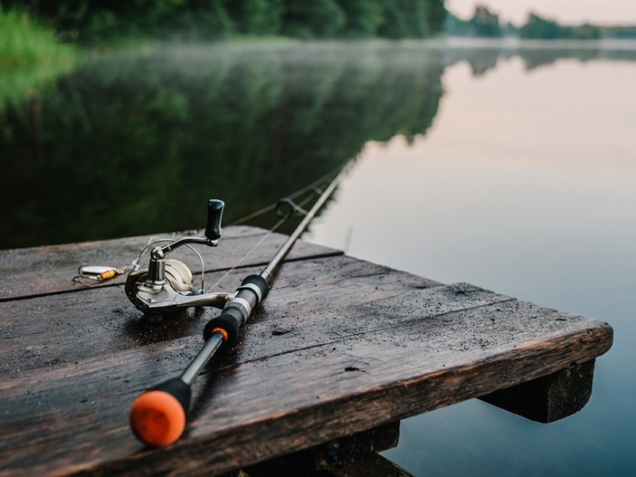

Рыба́лка — занятие выуживанием рыбы из водоёма с целью прокорма или для развлечения"?
К преимуществам отпускания пойманной рыбы можно отнести то, что часть отпущенной рыбы выживает, уменьшая депопуляцию
в то время как не ограниченный нормативами лов с последующим отпусканием может нанести популяции больший ущерб, в сравнении с изъятием из водоёма рассчитанной ихтиологами допустимой нормы вылова.
